Cover
Universidad Carlos III de Madrid · Master’s Thesis Defense · 2026
Master in Robotics and Automation
A Modular Biomimetic Ankle Exoskeleton Based on Antagonistic SMA Actuation: Design, Control, and Preliminary Evaluation
Sergio Jácobo Zavaleta
Supervisor: Dorin Sabin Copaci
RoboticsLab · Universidad Carlos III de Madrid
SRAR · Soft Robotics for Ankle Rehabilitation · PID2023-149141OB-I00
Why does early ankle rehabilitation require a different robotic design?
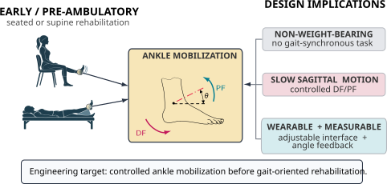
TARGET USE
Slow dorsiflexion–plantarflexion mobilization before or independently of gait training.
ENGINEERING GAP
Wearable fitting, flexible tensile transmission, SMA thermal constraints, sensing, and closed-loop control must operate as one system.
THESIS QUESTION
Can an antagonistic SMA ankle exoskeleton generate controlled, repeatable motion and preserve comparable tracking during prolonged non-weight-bearing operation?
The target is early, pre-ambulatory ankle mobilization — not gait assistance and not clinical effectiveness testing.
Where is the thesis positioned, and what does it set out to demonstrate?
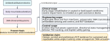
DESIGN
Traceable requirements → adjustable wearable mechanics → antagonistic SMA transmission.
CONTROL
Relative-angle feedback → BPID tracking → State Manager → safety supervision → actuator gating.
EVALUATION
Mannequin-based evidence for tracking, transmission-condition sensitivity, repeatability, and prolonged operation.
SYSTEM
01 · FROM REQUIREMENTS TO HARDWARE
SYSTEM
The physical evidence: what was designed, manufactured, connected, and actuated
What was actually built, and how is the complete system decomposed?

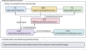
The wearable assembly provides the body interfaces and relative-angle geometry; actuation, electronics, and embedded control complete the mechatronic system.
How are adjustment and antagonistic tensile transmission implemented mechanically?

FLEXOR PATH
Anterior tibial hardpoint → Bowden/PTFE route → distal forefoot attachment.
EXTENSOR PATH
Posterior tibial hardpoint → independent route → posterior heel attachment.
WHY IT MATTERS
Pretension, seating, friction, and routing belong to the physical plant seen by the controller.
CONTROL
02 · HIERARCHICAL CLOSED-LOOP CONTROL
CONTROL
Direction, tracking effort, safety permission, and physical actuation are separate decisions
How does the control hierarchy coordinate opposing SMA actuator groups?
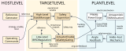
HIGH LEVEL
Reference-driven State Manager + independent Safety Supervisor.
LOW LEVEL
BPID generates the continuous tracking demand.
FINAL COMMAND
Directional request + readiness + safety permission → mutually exclusive actuator gating.
How does the State Manager select FLEX, IDLE, or EXT?
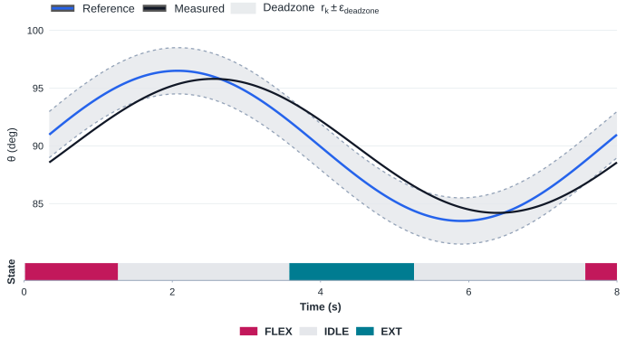
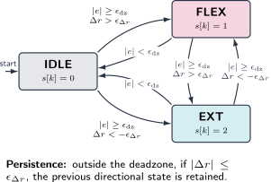
FLEX
Outside deadzone + increasing reference.
IDLE
Inside tracking deadzone → zero-command interval.
EXT
Outside deadzone + decreasing reference.
IDLE is a command state, not a measured or inferred SMA thermal state.
From tracking error to gated actuator commands
State allocation
Safe actuator command
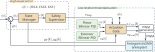
The contribution is not one equation in isolation; it is the coordinated path from state selection to safe, mutually exclusive physical commands.
METHODOLOGY
03 · EXPERIMENTAL METHODOLOGY
METHODOLOGY
A real mannequin-based plant, embedded target, laboratory power stage, and four complementary experimental conditions
How was the integrated prototype evaluated in the laboratory?

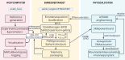
A
Pretensioned
Reduced transmission slack
B
Relaxed
Initial-condition sensitivity
C
Repeated cycles
Cycle-to-cycle repeatability
D
Active / recovery
Prolonged tracking behavior
RESULTS
04 · EXPERIMENTAL EVIDENCE
RESULTS
Transmission condition changes the response; repeated cycles remain closely clustered; prolonged operation does not show progressive error growth
How sensitive is tracking to the initial transmission condition?
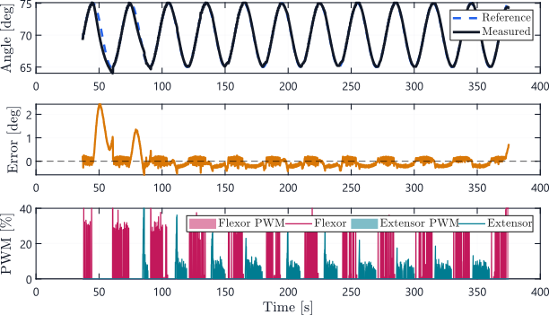
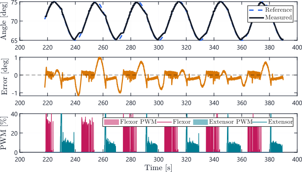
| Metric | A · pretensioned | B · relaxed |
|---|---|---|
| RMSE (°) | 0.388 | 0.346 |
| MAE (°) | 0.212 | 0.259 |
| Bias (°) | +0.028 | −0.072 |
| Max (°) | 2.440 | 1.170 |
| Measured P2P (°) | 11.082 | 9.929 |
The changes are not unidirectional: the experiment demonstrates sensitivity to transmission condition, not a universally optimal pretension setting.
Do the final actuator commands preserve directional exclusivity?
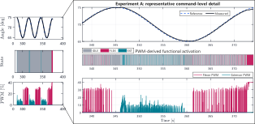
FLEX / EXT no overlap between non-zero final directional commands
IDLE zero-command intervals separate directional activations
OUTPUT-LEVEL CHECK
for the representative interval.
The functional state strip is derived from final PWM activity; it should not be interpreted as the internal State Manager log.
Does the ankle response remain repeatable from cycle to cycle?
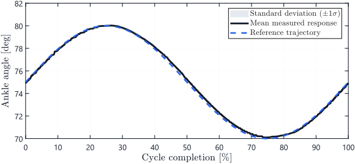
0.169° mean cycle RMSE
0.009° RMSE standard deviation
9 complete retained cycles
9.954 ± 0.130° measured peak-to-peak response
Does tracking error grow during prolonged active/recovery operation?
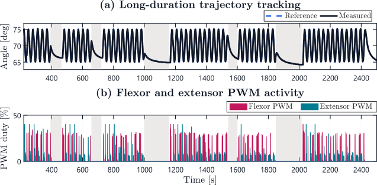
≈38 min selected protocol span
6 active batches
0.220° global active-batch RMSE
−0.117°/h descriptive RMSE trend
Tracking error did not progressively increase across the selected protocol; SMA temperature was not measured, so this is not evidence of validated thermal safety.
Representative non-weight-bearing ankle motion
Representative closed-loop dorsiflexion–plantarflexion on the mannequin testbed; this is not a gait trial.
CONCLUSIONS
05 · ENGINEERING INTERPRETATION
CONCLUSIONS
What the prototype demonstrates, what remains supported only by design, and what still requires dedicated verification
What has been demonstrated — and what remains outside the evidence?
DEMONSTRATED BY EXPERIMENT
Closed-loop sagittal tracking, cycle-to-cycle repeatability, mutually exclusive final actuator commands, and prolonged active/recovery operation under the tested mannequin-based conditions.
IMPLEMENTED IN PROTOTYPE
Adjustable wearable interfaces, antagonistic flexible transmission, relative-angle sensing, embedded control, and safety-oriented actuator gating.
OUTSIDE CURRENT EVIDENCE
Quantified human-interface loads, assistance torque, direct SMA temperature, validated thermal safety, fault tolerance, and clinical efficacy.
The thesis demonstrates the mechatronic feasibility of accurate, repeatable antagonistic-SMA ankle mobilization under the tested mannequin-based conditions — not clinical efficacy, quantified assistance torque, or validated thermal safety.
What are the next engineering steps?
INSTRUMENT SAFETY
Direct SMA temperature and electrical sensing for quantitatively validated thermal supervision.
VERIFY ROBUSTNESS
Fault injection, transmission-condition sweeps, mechanical durability, and quantitative interface-load assessment.
PROGRESS VALIDATION
Human-compatible interfaces and controlled seated/bed-based pilot evaluation after dedicated safety verification.
The next stage is direct instrumentation and quantitative safety/mechanical validation before extending evaluation beyond the mannequin platform.
Closing
Universidad Carlos III de Madrid · Master’s Thesis Defense · 2026
Thank you
Questions?
A Modular Biomimetic Ankle Exoskeleton Based on Antagonistic SMA Actuation
Sergio Jácobo Zavaleta
Supervisor: Dorin Sabin Copaci RoboticsLab · Universidad Carlos III de Madrid
SRAR · Soft Robotics for Ankle Rehabilitation
BACKUP
SUPPORTING MATERIAL
BACKUP
Detailed design, control, methodology, and experimental evidence for jury questions
Backup · Full engineering requirement matrix
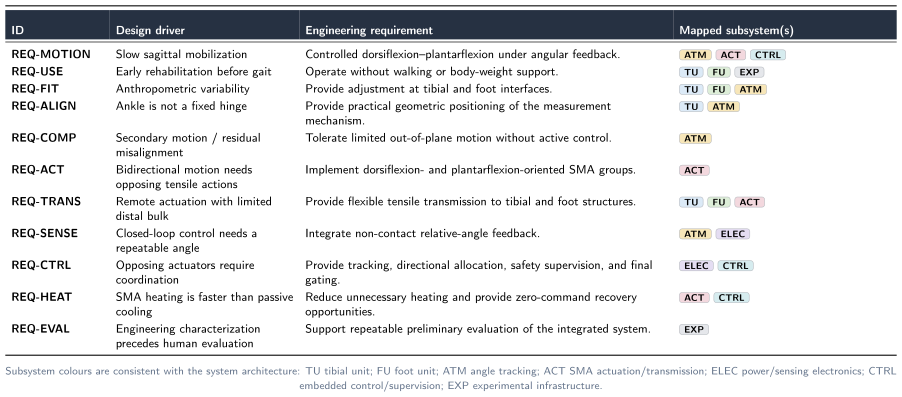
Backup · Requirement verification and remaining validation
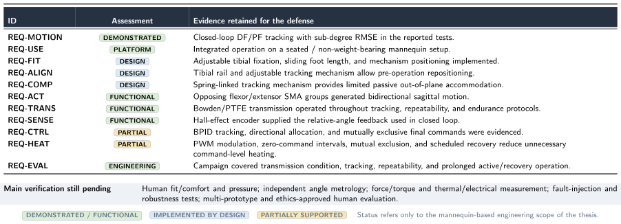
Backup · Positioning against representative antagonistic SMA systems
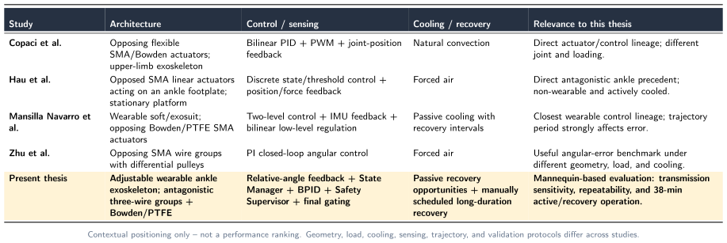
Backup · Device taxonomy
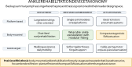
Backup · Mechanical architecture details

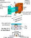

Backup · Active-batch and scheduled-recovery protocol
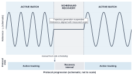
INTERPRETATION
Trajectory generation is suspended and the reference is aligned with the measured angle during scheduled recovery. The interval provides a longer zero-command opportunity but does not measure or infer SMA thermal recovery.
Backup · Complete Experiment A / B traces


Backup · Complete Experiment C / D traces


Backup · From BPID tracking law to final gated commands
CONTROL LAW AND DUTY DEMAND
Tracking and discrete PID
Bilinear scaling and actuator demand
recovers the corresponding conventional PID form.
SUPERVISORY ALLOCATION AND FINAL GATING
Direction and system readiness
Final physical commands
Thus, simultaneous intentional FLEX/EXT heating is excluded at the final physical-command level.
Backup · Electrical sizing and actuator-group parameters
| Parameter | Design value |
|---|---|
| SMA wire | NexMetal NiTi, Ø 0.5 mm |
| Wires per directional group | 3 in parallel |
| Active wire length | ≈ 3.0 m |
| Equivalent resistance | ≈ 5.1 Ω |
| Nominal group current | ≈ 11.7 A |
| Required DC voltage | ≈ 60 V |
| Nominal peak group power | ≈ 702 W |
| PWM frequency | 1 kHz |